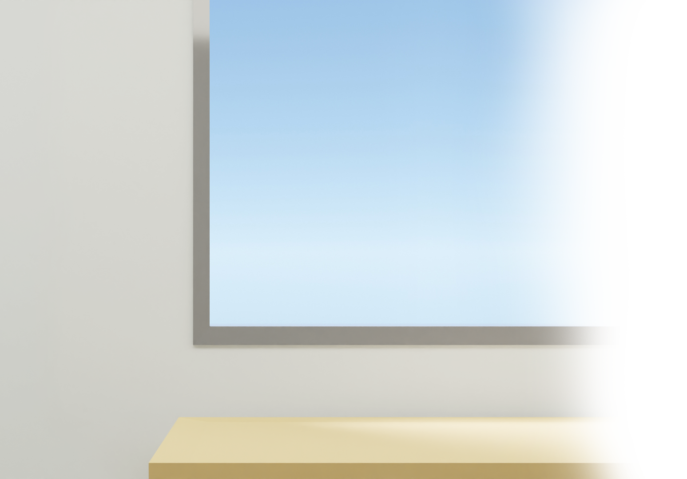
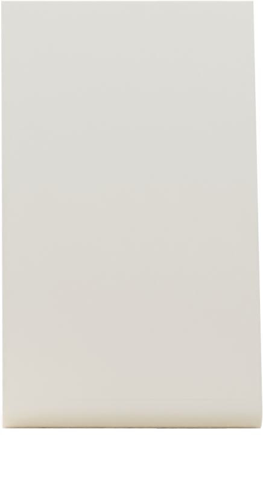
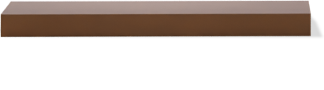
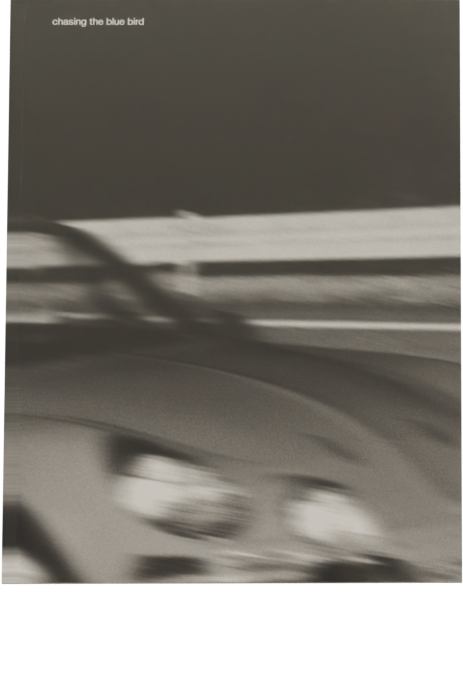
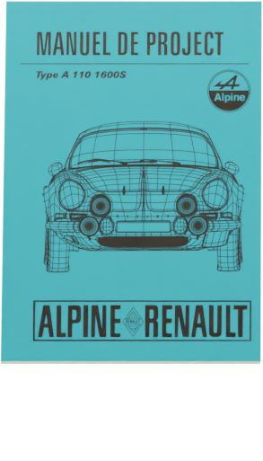
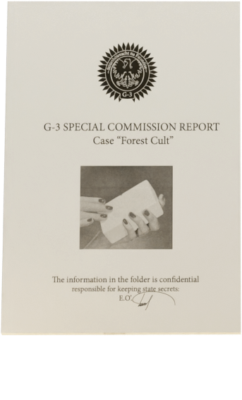
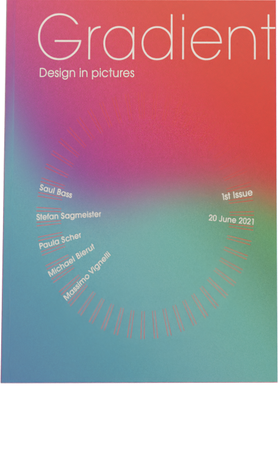

Major project
This book is an attempt to convey the obsession with the car – Renault Alpine A110 1600s. Through images I tried to find visual relations between the dynamics of the car, its forms, and the environment.
Эта книга – попытка передать одержимость автомобилем Renault Alpine A110 1600s.
С помощью фотографий я попытался найти визуальные сочетания между динамикой машины, ее формами и окружением.



Forest cult
Forest cult is a fictive story about lepricons-terrorist performed in a form of police reports. In the project the main point was to maintain the realism of the documents’ style and the plot itself.
Культ леса является фиктивной историей о леприконах-террористах, воплащенная в формате отчетов полиции. Основная цель проекта заключалась в поддержании реализма оформления документов и самой истории

Gradient
The cover for the Gradient publication dedicated to design and designers from all over the world. The project was inspired by Swiss school of graphic designers.
Обложка для издания Gradient — журнала, посвященного дизайну и дизайнерам. В качестве вдохновения я использовал работы швейцарских графических дизайнеров.
